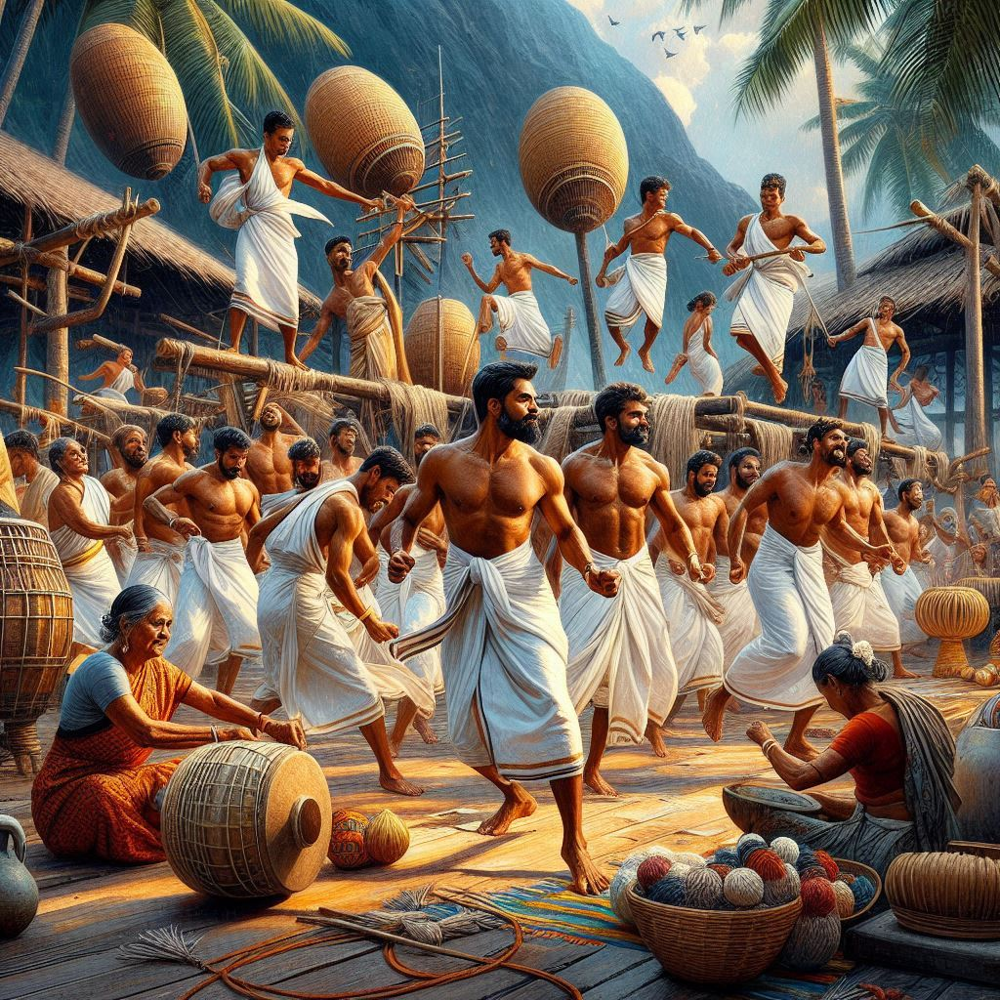
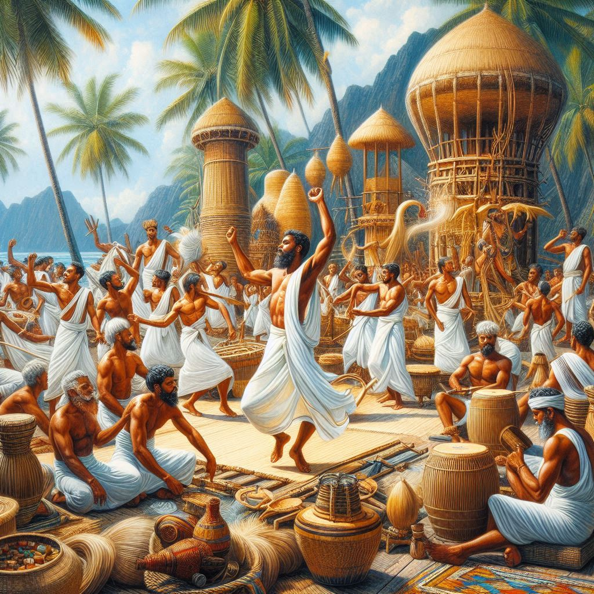

The culture of Lakshadweep is a unique blend of various influences, with its rich heritage rooted in the traditions of the local islanders, as well as the influences of Arab, Malabar, and other Indian coastal cultures. The islands of Lakshadweep have been a melting pot of diverse traditions, thanks to centuries of trade and cultural exchange with the Arabian Peninsula and the Indian mainland.
1. Traditional Music and Dance
- Mappila Songs: One of the most popular music forms in Lakshadweep is the Mappila Pattu, sung in the local Mappila Malayalam dialect. These songs are a blend of Arabic, Malayalam, and Islamic influences and are mainly performed by men.
- Dholak and Oud: Traditional music is often accompanied by instruments like the dholak, tabla, and oud, an Arabian string instrument. The melodies are rhythmic and usually celebratory.
- Dances: Traditional dances in Lakshadweep include Kolkkali and Parichakali, performed during festivals with rhythmic movements in circles.
2. Religious Practices
- Eid Celebrations: Eid al-Fitr and Eid al-Adha are major festivals, involving prayers, feasts, and community gatherings.
- Ramadan: The holy month is observed with fasting from dawn to dusk, prayer, and family gatherings.
- Other Religious Festivals: Festivals like Mahalaya and Shab-e-Barat are celebrated with traditional rituals.
3. Cuisine
- Seafood: Fish is a staple food with a rich variety of seafood dishes, including masala fish and fish curry.
- Rice and Coconut: Main staples served with coconut-based curries, including Kerala Parotta and Appam.
- Desserts: Popular desserts include Vattayappam and Elai Cheera.


4. Clothing
- Men’s Clothing: Men typically wear lungis or sarongs, sometimes with a taqiyah cap.
- Women’s Clothing: Traditional attire includes salwar kameez or niqab with a dupatta.
5. Festivals
- Eid al-Fitr and Eid al-Adha: Major festivals with prayers and community events.
- Makar Sankranti: Celebrated with rituals, feasts, and social events.
- Onam: Involves feasting and traditional games.
6. Arts and Crafts
The people are known for shell work, coir weaving, and handicrafts made from coconut and palm leaves.
7. Language
The primary language spoken is Malayalam, with dialects influenced by Arabic and Tamil. On Minicoy, Dhivehi is spoken.
8. Community Life
Social gatherings, community meals, and religious events are central, fostering a sense of unity.
Conclusion
The culture of Lakshadweep blends Islamic heritage, coastal influences, and a reliance on the sea for sustenance. The music, dance, and traditions reflect the community’s deep cultural ties.